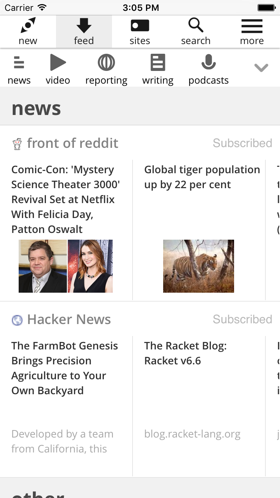
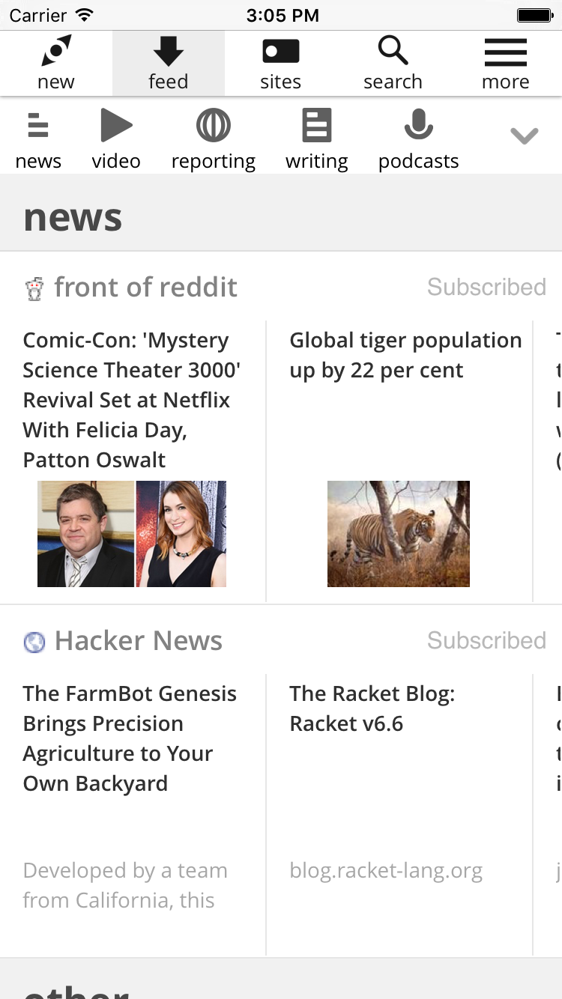

19 year old Software Engineering student at University of Glasgow.
Interested in making useful software tools.
19 year old Software Engineering student at University of Glasgow.
Interested in making useful software tools.
Worked at a mobile and web app consultancy in Edinburgh. Helped one of their clients brainstorm designs for their product, made mockups for new feature ideas for their current project. Built a native iOS app showcasing one segment of the app.
I have created multiple Brackets editor extensions in NodeJS which have active users, have been starred and had contributions from some of their users on github.
A full stack web application that allowed users to discover and subscribe to websites in one place. Ran using web.py on the Google App Engine Flexible environment. It used a postgres database on one server then another for serving content and another for scraping websites. Uses python lxml to scan HTML and XML pages for new links, RSS feeds, images and scrapes text snippets. Uses its own indexer, search engine and algorithm for understanding the structure of broken RSS feeds.
 
